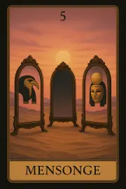

Famille 5 – Thot (Mercure)
Cette famille explore la parole, la pensée structurée, les lois et les transmissions. Elle est liée à Mercure et à Thot, dieu du Verbe sacré, de l’écriture et de l’équilibre mental. Elle éclaire notre manière de formuler, de comprendre et de transmettre notre vérité intérieure.
Carte 5 – Mensonge
Mots-clés : Tromperie, Manipulation, Confusion, Désinformation, Secrets
Numérologie : 5 – Changement, Mouvement, Disruption, Communication
Planète principale : Mercure
Divinité principale : Thot
Planète secondaire : Soleil
Divinité secondaire : Râ
Interprétation de la carte 5 : Mensonge (droite)
1. Caractère de la personne
La carte Mensonge représente une personne qui peut se retrouver dans des situations où la communication est brouillée ou détournée. Sous l'influence de Mercure et Thot, cette personne pourrait avoir une facilité à manipuler les mots, ou à dissimuler la vérité pour parvenir à ses fins. Cela peut être une personne confuse ou une personne qui vit dans l’illusion, que ce soit volontairement ou non. L'influence du Soleil et de Râ adoucit cette énergie, en indiquant que, bien que des mensonges ou de la désinformation soient en jeu, il existe un potentiel pour révéler la vérité et apporter lumière à la situation. La personne pourrait être appelée à clarifier les choses et à se réconcilier avec la vérité.
2. Plan affectif
Dans le domaine affectif, Mensonge peut indiquer une relation marquée par des mensonges, des secrets ou des confusions. Cela pourrait concerner une situation où une personne cache la vérité ou manipule les informations émotionnelles. L’influence de Mercure et de Thot révèle souvent des rétentions de la part des deux partenaires, où la vérité est dissimulée ou détournée. Cependant, l'influence secondaire du Soleil et de Râ suggère qu’il est possible d’éclairer cette situation, de révéler la vérité et d’établir une communication plus claire et authentique.
3. Plan matériel
Sur le plan matériel, Mensonge pourrait indiquer des décisions ou des informations erronées qui affectent des projets ou des démarches financières. Il peut aussi s'agir d'une situation où des informations cachées ou des mensonges viennent perturber le bon déroulement d'une affaire. Cette carte suggère que la personne pourrait se trouver dans une situation de confusion financière ou administrative, où la vérité est obscurcie par des facteurs externes. L’influence du Soleil et de Râ montre qu'il est important de chercher à éclaircir ces zones d'ombre pour trouver la vérité derrière les informations trompeuses.
4. Plan professionnel
Dans le domaine professionnel, Mensonge annonce des mensonges, des manipulations ou des dissimulations de faits dans le milieu du travail. Cela peut indiquer une ambiance de tromperie au sein d'une entreprise, ou des décisions prises sur de fausses informations. L'influence de Mercure et de Thot accentue la manipulation des mots et des idées dans un environnement professionnel, créant un manque de transparence. Cependant, l'influence secondaire du Soleil et de Râ pourrait suggérer que la personne a le pouvoir d’éclairer cette situation, de révéler la vérité et d’amener une résolution constructive.
5. Plan spirituel
Spirituellement, Mensonge peut signaler une distorsion de la vérité intérieure. La personne pourrait être en perte de repères spirituels, ou elle pourrait se mentir à elle-même sur ses véritables intentions ou aspirations spirituelles. L’influence de Thot, dieu de la sagesse et de l’écriture, met en lumière la recherche de vérité, mais cette recherche peut être bloquée par des illusions ou des fausses croyances. L'influence secondaire du Soleil et de Râ indique que la lumière spirituelle est présente pour dissiper les ombres et aider la personne à retrouver la vérité divine en elle-même.
Carte 5 : Mensonge (inversée)
Lorsqu'inversée, la carte Mensonge indique que la désinformation ou les mensonges sont maintenant exposés ou révélés, mais de manière parfois difficile. L'influence de Mercure et de Thot, dans ce cas, révèle la vérité avec peut-être dureté ou confusion, mais la situation devient plus claire. L'inversion de cette carte implique également que la personne pourrait se retrouver dans une situation de confusion extrême, où la vérité est difficile à discerner.
1. Caractère de la personne
En position inversée, Mensonge montre une personne qui cache la vérité ou qui est elle-même victime de tromperie. Cela peut aussi symboliser une tendance à éviter la réalité ou une incapacité à communiquer de manière transparente. La personne pourrait être dans une phase de conflit intérieur où elle ment à elle-même ou dissimule ses véritables intentions. L'influence de Râ et du Soleil peut aider à éclaircir la situation, mais cela nécessite un travail de révélation intérieure.
2. Plan affectif
Sur le plan affectif, Mensonge inversée indique que des mensonges ou des confusions dans une relation peuvent maintenant éclater au grand jour, mais cela peut mener à des conflits ou des déséquilibres émotionnels. Il peut y avoir une révélation douloureuse concernant des secrets ou des fausses promesses. Cependant, l'influence de Râ et du Soleil apporte la lumière, suggérant que la situation, bien que difficile, pourrait permettre un épanouissement émotionnel et une réconciliation sincère.
3. Plan matériel
Sur le plan matériel, l’inversion de Mensonge suggère que les obstacles ou mensonges financiers sont maintenant révélés, mais la personne pourrait être confrontée à des conséquences difficiles. Cela pourrait concerner des situations de fraude ou de dissimulation financière qui sont maintenant mises en lumière. Cependant, l'influence du Soleil et de Râ permet d’apporter de la clarté, de résoudre les confusions financières et de rétablir un ordre matériel.
4. Plan professionnel
Professionnellement, l’inversion de Mensonge montre que les mensonges dans le domaine professionnel sont désormais révélés, créant des tensions ou des conflits au travail. Cela pourrait signifier la découverte de malversations ou de fausses informations qui ont été utilisées pour manipuler des situations professionnelles. Cependant, l’influence de Râ et du Soleil montre que la vérité, même si elle est douloureuse, pourra révéler les bonnes opportunités pour avancer.
5. Plan spirituel
Spirituellement, l’inversion de Mensonge pourrait signifier un désalignement avec la vérité spirituelle, ou un manque de clarté intérieure concernant le chemin spirituel. La personne pourrait se retrouver dans un état de confusion spirituelle, ou confrontée à des croyances erronées qui doivent être surmontées. L'influence de Râ et du Soleil indique que la révélation spirituelle est à portée de main, mais cela nécessite un travail de révélation de la vérité intérieure et un réalignement profond.
Résumé de la carte 5 : Mensonge
La carte Mensonge incarne des tromperies, des manipulations et des confusions dans la communication. Elle symbolise un moment où la vérité est cachée ou déformée. En position inversée, cette carte annonce la révélation de la vérité, mais souvent de manière difficile, ce qui peut provoquer des conflits ou des perturbations dans les domaines affectifs, matériels, professionnels et spirituels. Cependant, l’influence du Soleil et de Râ donne toujours la possibilité de résoudre les mensonges et de trouver la clarté.
Carte 14 – Perception
Mots-clés : : Interprétation erronée, Vision déformée, Doute, Mauvaise compréhension, Déformation
Numérologie : 14 – Biais, Perception erronée, Équilibre
Planète principale : Mercure
Divinité principale : Thot
Planète secondaire : Terre
Divinité secondaire : Geb
Interprétation de la carte 14 : Perception (droite)
1. Caractère de la personne
La carte Perception représente une personne qui peut interpréter les situations de manière erronée, influencée par des biais personnels ou des croyances limitantes. Elle peut être susceptible de faire des jugements rapides ou de se laisser guider par des perceptions faussées. Sous l'influence de Mercure / Thot, cette personne a un intellect acéré et une grande capacité de réflexion, mais son interprétation des faits peut être déformée par ses émotions ou ses préjugés. L'influence secondaire de Terre / Geb peut offrir un ancrage nécessaire pour rationaliser les perceptions et rétablir un équilibre, mais la personne peut être trop attachée à sa vision actuelle des choses pour reconnaître les erreurs dans son jugement. Cette carte appelle à un travail sur la clarté mentale et à prendre le temps de réévaluer les situations avant de tirer des conclusions.
2. Plan affectif
Dans le domaine affectif, Perception indique que les relations peuvent être marquées par des malentendus ou des interprétations erronées des intentions des autres. Cela peut signifier que la personne ou son partenaire voit les choses sous un mauvais angle, créant ainsi des doutes ou des incompréhensions. Cela pourrait aussi être un appel à clarifier les malentendus dans une relation, à éviter les interprétations hâtives ou à communiquer plus ouvertement. L'influence de Mercure / Thot montre que cette situation peut être résolue par la communication, mais l'influence de Terre / Geb souligne qu'il faut être ancré dans la réalité et éviter de projeter des perceptions déformées sur les autres.
3. Plan matériel
Sur le plan matériel, Perception symbolise un moment où une interprétation erronée des événements ou des faits peut avoir des conséquences sur les décisions importantes. Cela pourrait se traduire par une mauvaise évaluation de certaines situations professionnelles ou financières. Peut-être que des doutes ou des peurs influencent la personne à prendre des décisions basées sur une vision partielle ou déformée de la réalité. L'influence secondaire de Terre / Geb conseille de revenir à la réalité et d'examiner les faits de manière objective, afin de ne pas être trompé par des perceptions biaisées. Cette carte suggère qu’il est crucial de revoir les informations avant de se lancer dans une action importante.
4. Plan professionnel
Dans le domaine professionnel, Perception peut symboliser une mauvaise interprétation des intentions des collègues ou supérieurs. La personne peut se retrouver à mal comprendre des signaux ou des directives, ce qui peut entraîner des erreurs de jugement dans son travail. Cela peut aussi signifier que la personne est influencée par des biais personnels qui l'empêchent de prendre du recul ou de voir les choses sous un autre angle. L'influence de Mercure / Thot permet de réfléchir de manière analytique, mais l'influence de Terre / Geb apporte un appel à agir de manière réaliste et à mettre en question les impressions superficielles pour éviter toute confusion ou erreur dans la prise de décision professionnelle.
5. Plan spirituel
Spirituellement, Perception suggère que la personne pourrait être dans une période où ses perceptions spirituelles sont distordues. Elle pourrait avoir une vision fausse de ses croyances ou de ses pratiques spirituelles, influencée par des idées préconçues ou des croyances limitantes. La carte invite à un moment de réflexion et de clarification spirituelle, pour vérifier si les perceptions sont bien en phase avec la vérité intérieure. L'influence de Mercure / Thot suggère que la personne a les outils nécessaires pour réajuster sa compréhension spirituelle, tandis que l'influence de Terre / Geb l'ancre dans une approche pratique et réaliste de ses croyances, afin d’éviter de se perdre dans des interprétations erronées.
Carte 14 : Perception (inversée)
Lorsqu'elle est inversée, la carte Perception symbolise une vision encore plus déformée des choses. Cela peut signifier que la personne est encore plus prisonnière de ses croyances erronées et que sa capacité à voir la vérité est totalement obscurcie. Il se peut aussi que la personne refuse de voir les choses telles qu'elles sont et préfère rester dans l’illusion ou l’auto-tromperie. Cette inversion signale une mécompréhension totale de la situation ou un refus de reconnaître la réalité, ce qui empêche la personne de progresser.
1. Caractère de la personne
En position inversée, Perception peut indiquer une personne qui est bloquée dans sa manière de percevoir les situations. Elle pourrait être aveugle à la vérité, et ses jugements sont fortement influencés par des biais personnels ou des distorsions émotionnelles. Cela peut également signifier qu'une personne est fermée à de nouvelles perspectives ou qu'elle refuse de voir les choses sous un autre angle, la rendant difficile à raisonner ou à faire évoluer.
2. Plan affectif
Sur le plan affectif, l’inversion de Perception symbolise une relation marquée par des malentendus persistants. La personne peut être dans une phase où elle interprète les comportements de son partenaire de manière erronée, ce qui peut mener à des doutes ou des conflits émotionnels. Cela pourrait également signaler une rupture émotionnelle où la personne ne veut pas voir ou reconnaître les problèmes dans la relation. La carte suggère que des clarifications et des conversations ouvertes sont nécessaires pour éviter un désastre dans la relation.
3. Plan matériel
Sur le plan matériel, Perception inversée signifie que la personne est peut-être trompée par des apparences ou ne voit pas la réalité financière ou professionnelle. Cela pourrait signaler un faux jugement des situations ou des décisions mauvaises basées sur une compréhension déformée des faits. Il est essentiel de rechercher des informations plus fiables et de ne pas se laisser influencer par des idées préconçues qui pourraient entraver les progrès matériels.
4. Plan professionnel
Dans le domaine professionnel, l’inversion de Perception montre que la personne est dans une phase où elle n'arrive pas à voir la situation professionnelle sous son vrai jour. Cela pourrait être un signe qu’elle est mal informée, qu’elle prend des décisions erronées à cause de fausses perceptions ou qu’elle est trompée par ses propres croyances dans le monde du travail. La carte invite à vérifier les faits et à ne pas se laisser guider uniquement par des intuitions ou des jugements hâtifs.
5. Plan spirituel
Spirituellement, Perception inversée indique une vision faussée de la vérité spirituelle. La personne pourrait être dans l'illusion ou l'auto-tromperie, se laissant guider par des croyances limitantes ou des fausses interprétations. Il est crucial de faire preuve de discernement et de chercher la clarté spirituelle pour ne pas se perdre dans des chemins spirituels qui ne sont pas alignés avec la vérité intérieure.
Résumé de la carte 14 : Perception
La carte Perception met en lumière une vision déformée des faits. Elle indique qu’une personne pourrait interpréter les situations de manière erronée en raison de ses biais personnels. En position inversée, la carte symbolise un blocage complet dans la perception, où la personne refuse de voir la vérité ou est totalement influencée par des distorsions émotionnelles.
Carte 23 – Doute
Mots-clés : : Incertitude, Hésitation, Perte de confiance, Indécision, Manque de clarté
Numérologie : 23 – Incertitude, Dilemme, Recherche de clarté, Période d’hésitation
Planète principale : Mercure
Divinité principale : Thot
Planète secondaire : Jupiter
Divinité secondaire : Amon-Rê
Interprétation de la carte 23 : Doute (droite)
1. Caractère de la personne
La carte Doute symbolise une personne traversant une période d'incertitude ou de perte de confiance. Elle se trouve dans un état de réflexion profonde, mais manque de clarté sur la voie à suivre. Il se peut qu’elle fasse face à une difficulté à prendre une décision ou à s’engager dans une direction, soit à cause de doutes internes, soit parce qu’elle n'a pas toutes les informations nécessaires pour avancer. L’influence de Mercure / Thot encourage l’introspection et l’analyse, mais peut aussi entraîner un excès d'analyse ou de doute intellectuel, conduisant à l’indécision. Jupiter / Amon-Rê, en influence secondaire, ajoute une vision plus large, suggérant que bien que la situation semble floue, une perspective plus vaste peut apporter de la clarté avec le temps.
2. Plan affectif
Sur le plan affectif, Doute indique une période d’hésitation ou de confusion émotionnelle. La personne peut éprouver des incertitudes sur ses sentiments ou sur la direction que doit prendre une relation. Il peut y avoir des doutes sur la sincérité d’une autre personne ou des incertitudes concernant la stabilité de la relation. L’influence de Mercure / Thot montre une réflexion mentale importante sur les émotions, mais cela peut créer un déséquilibre émotionnel si la personne reste trop dans le domaine mental, au lieu de se reconnecter à ses sentiments authentiques. Jupiter / Amon-Rê encourage à prendre du recul, à chercher une vision plus claire sur la relation et à se recentrer sur ce qui est réellement important pour avancer avec sérénité.
3. Plan matériel
Dans le domaine matériel, Doute représente une période d'incertitude professionnelle ou financière. Cela peut signifier une indécision sur les choix à faire pour avancer, ou une perte de confiance dans les informations disponibles, qu’il s’agisse de décisions financières, de projets ou d'opportunités professionnelles. Mercure / Thot indique un besoin d’analyser les options avec soin, mais il y a un danger de trop réfléchir sans passer à l'action. Jupiter / Amon-Rê, en influence secondaire, montre que malgré la confusion actuelle, une perspective plus large pourra offrir des réponses et des solutions durables si l’on garde une ouverture d’esprit.
4. Plan professionnel
Professionnellement, Doute indique une phase d'incertitude dans la carrière ou dans un projet. La personne peut être en hésitation quant à l’avenir de son travail, un changement de direction ou une difficulté à prendre une décision importante. Il peut également symboliser un manque de confiance dans ses capacités professionnelles. L'influence de Mercure / Thot invite à réfléchir et à analyser, mais l'excès de réflexion pourrait mener à l’inactivité ou à des décisions retardées. Jupiter / Amon-Rê offre un éclairage sur les opportunités à long terme et encourage la confiance en une vision plus vaste, mais il est important de ne pas laisser le doute paralyser l’action.
5. Plan spirituel
Spirituellement, Doute symbolise une période de remise en question ou de confusion spirituelle. La personne peut traverser une phase de doutes profonds concernant sa voie spirituelle ou ses croyances. Il peut y avoir un déséquilibre spirituel, un manque de clarté sur le chemin à suivre ou une perte de connexion avec des pratiques spirituelles nourrissantes. L’influence de Mercure / Thot encourage à rechercher la vérité intérieure, mais cette recherche peut être obstruée par l’indécision et l’analyse excessive. Jupiter / Amon-Rê ouvre la possibilité d'un renouveau spirituel, apportant une vision élargie qui permet de trouver une direction spirituelle claire.
Carte 23 : Doute (inversée)
Lorsqu'elle est inversée, Doute symbolise une clarification ou une réduction de l'incertitude. Cela peut signifier que la personne a finalement surmonté ses doutes ou trouvé des réponses aux questions qui la tourmentaient. Il se peut qu’elle ait trouvé une résolution intérieure ou une solution externe qui dissipe la confusion. L’inversion de cette carte indique souvent que la personne est prête à passer à l’action, à prendre une décision ou à s’engager pleinement après une période d’hésitation.
1. Caractère de la personne
En position inversée, Doute symbolise une personne qui a surmonté ses hésitations et est désormais plus confiante dans ses choix et ses décisions. Elle est capable de clarifier sa pensée et de mettre de côté les doutes qui l’empêchaient d’avancer. Cette carte inversée peut indiquer que la personne est prête à passer à l’action après une période d’introspection et de réflexion.
2. Plan affectif
Sur le plan affectif, Doute inversé représente la fin de l'incertitude émotionnelle. Cela peut signifier que la personne trouve enfin clarté dans ses sentiments ou que des questions relationnelles qui étaient sources de confusion ou de tension trouvent une solution. La relation entre dans une phase de soutien mutuel et de confiance retrouvée. Les obstacles émotionnels qui causaient de l’hésitation commencent à se dissiper, et les doutes se dissipent, laissant place à une relation plus stable et plus sereine.
3. Plan matériel
Dans le domaine matériel, Doute inversé symbolise la fin des blocages financiers ou professionnels. Cela pourrait signifier qu’après une période d’incertitude, la personne trouve enfin une solution claire à ses problèmes matériels. Les hésitations sur des choix financiers ou professionnels sont dissipées, et des résultats tangibles commencent à apparaître. La carte inversée encourage à prendre des décisions pratiques, basées sur la clarté retrouvée, pour avancer efficacement dans le domaine matériel.
4. Plan professionnel
Professionnellement, Doute inversé représente une période où la personne se sent plus confiée dans ses décisions professionnelles. Elle a surmonté l'incertitude liée à sa carrière ou à son travail et est prête à passer à l’action. Cela peut signifier la fin des hésitations sur un projet ou un engagement à se lancer dans une nouvelle direction professionnelle. Les obstacles professionnels sont progressivement levés, et la personne commence à avancer avec certitude et détermination.
5. Plan spirituel
Spirituellement, Doute inversé symbolise la révélation spirituelle ou un retour à une pratique spirituelle claire. La personne a clarifié ses croyances et trouve une direction spirituelle stable et alignée avec ses valeurs. Elle est capable de réconcilier ses doutes spirituels et de se reconnecter à sa vérité intérieure. Cette carte inversée montre qu’après une période de confusion spirituelle, la personne a trouvé un chemin de paix intérieure.
Résumé de la carte 23 : Doute
La carte Doute représente une période d’incertitude, de réflexion et d’hésitation, où la personne manque de clarté dans ses décisions. En position inversée, cette carte symbolise la résolution des doutes, une clarification et une confiance retrouvée, permettant à la personne de passer à l’action avec une vision plus claire.
Carte 32 – Isolement
Mots-clés : : : Solitude, Déconnexion, Communication brisée, Coupure, Distance émotionnelle
Numérologie : 32 – Isolement volontaire ou forcé, Rupture de liens, Détachement émotionnel, Distance
Planète principale : Mercure
Divinité principale : Thot
Planète secondaire : Mars
Divinité secondaire : Sekhmet
Interprétation de la carte 32 : Isolement (droite)
1. Caractère de la personne
La carte Isolement symbolise une personne qui traverse une période de détachement émotionnel ou de solitude. Cette carte peut indiquer une personne qui se sent déconnectée des autres, soit volontairement, soit en raison de circonstances extérieures. L’influence de Mercure / Thot dans son aspect communicationnel suggère que cette personne peut être confrontée à des problèmes de communication, avec des malentendus prolongés ou une rupture de dialogue. Sous l'influence de Mars / Sekhmet, cette personne peut ressentir de la frustration ou de l’agitation intérieure en raison de l’incapacité à exprimer ses émotions ou ses pensées de manière claire et ouverte. Elle pourrait avoir une force intérieure pour gérer cette solitude, mais aussi un désir de rétablir des liens afin de surmonter cet isolement.
2. Plan affectif
Sur le plan affectif, Isolement représente une rupture de communication dans une relation. Cela peut symboliser un éloignement émotionnel avec un partenaire, ou une distance imposée par des malentendus ou des conflits non résolus. La personne peut se retrouver dans une phase de solitude affective, où l’échange avec l’autre est limité, ou où les émotions restent non exprimées. Mercure / Thot en influence principale souligne le besoin de communication, tandis que Mars / Sekhmet indique que cette situation peut engendrer des tensions internes ou des frustrations face à cette rupture de lien. La carte invite à rompre l'isolement en prenant des mesures concrètes pour rétablir la communication.
3. Plan matériel
Dans le domaine matériel, Isolement symbolise une séparation ou un retrait professionnel. Cela peut signifier une situation où la personne est mise à l’écart dans son environnement de travail ou où ses projets stagnent à cause d’une rupture de communication. Cela pourrait aussi indiquer une phase de réflexion solitaire nécessaire avant de prendre une grande décision matérielle ou financière. L’influence de Mars / Sekhmet donne la force d’agir et de surmonter l’isolement, mais la carte souligne qu’il est crucial de rétablir les échanges et les collaborations pour faire avancer les projets.
4. Plan professionnel
Professionnellement, Isolement peut indiquer une période où la personne se sent exclue ou mise à l'écart dans son domaine de travail. Cela peut aussi symboliser des problèmes de communication dans un projet ou un conflit professionnel qui mène à un détachement émotionnel et professionnel. L’influence de Mercure / Thot montre que les problèmes de communication ou les difficultés relationnelles au travail sont au cœur de cette situation, et Mars / Sekhmet suggère qu’il est nécessaire d’agir avec force et détermination pour sortir de l’isolement et rétablir des connexions constructives dans le milieu professionnel.
5. Plan spirituel
Spirituellement, Isolement évoque une période de retour sur soi-même, où la personne cherche des réponses intérieures ou se retire pour se recentrer spirituellement. Cela peut aussi symboliser une période de déconnexion spirituelle, où la personne ressent un vide intérieur ou une distance spirituelle. La carte suggère qu'il est nécessaire de réévaluer son chemin spirituel et de prendre du temps pour se reconnecter à sa propre essence intérieure. L’influence de Mercure / Thot montre l'importance de réfléchir profondément et de trouver les réponses à travers la méditation ou l'introspection. Mars / Sekhmet soutient l'idée que la personne doit agir avec force intérieure pour rompre cette déconnexion et trouver un chemin spirituel plus aligné.
Carte 32 : Isolement (inversée)
Lorsqu'elle est inversée, Isolement indique que la personne est trop repliée sur elle-même ou évite les connexions sociales et émotionnelles. Cela peut signifier que l’isolement est devenu une forme de fuite plutôt qu’un choix constructif. La personne pourrait être dans un état de détresse émotionnelle mais refuse de sortir de sa zone de confort ou de rétablir les liens brisés. L'inversion de cette carte met en lumière une solitude auto-imposée, souvent causée par des peurs ou des doutes internes. Elle incite à sortir de l’isolement et à chercher à rétablir la communication avec les autres pour guérir et avancer.
1. Caractère de la personne
En position inversée, Isolement peut symboliser une personne qui est très isolée émotionnellement, mais qui refuse d’ouvrir la porte à la guérison ou à la réconciliation. Elle peut être prisonnière de ses propres pensées et de ses peurs, ce qui l’empêche d’agir. L'inversion suggère que cette personne doit faire face à son isolement et se réouvrir aux autres.
2. Plan affectif
Sur le plan affectif, Isolement inversé peut indiquer une personne qui ne parvient pas à rompre son isolement émotionnel malgré les signes évidents qu’il est temps de se réconcilier ou de reprendre contact avec l’autre. Cela peut aussi signifier que la personne refoule ses émotions ou évite de discuter des problèmes dans la relation. L'inversion de cette carte appelle à la communication ouverte, à surmonter les peurs de l'intimité, et à rétablir des liens affectifs solides.
3. Plan matériel
Dans le domaine matériel, Isolement inversé symbolise une incapacité à rompre un isolement professionnel ou social qui limite les opportunités. Cela peut aussi signifier que la personne se sent bloquée dans ses projets matériels en raison de son refus de chercher du soutien ou d’accepter des changements nécessaires. L’inversion appelle à rechercher activement de l'aide ou à collaborer avec les autres pour surmonter l’isolement professionnel.
4. Plan professionnel
Professionnellement, Isolement inversé peut signifier que la personne est trop enfermée dans sa routine ou son travail sans chercher de nouveaux défis ou de nouvelles opportunités. Elle peut se sentir bloquée par sa propre réticence à sortir de sa zone de confort. L’inversion de cette carte incite à rompre les barrières et à s’engager activement dans la collaboration et la recherche de nouvelles voies professionnelles.
5. Plan spirituel
Spirituellement, Isolement inversé symbolise une personne qui s'isole trop spirituellement, se fermant aux enseignements extérieurs ou à l’aide d’autrui. Cette carte met en lumière une personne qui est bloquée dans sa propre quête spirituelle, incapable de se réconcilier avec soi-même ou d’aller au-delà de ses peurs spirituelles. L'inversion appelle à ouvrir l'esprit et à chercher un soutien spirituel, à rompre l'isolement spirituel pour progresser dans son parcours.
Résumé de la carte 32 : Isolement
La carte Isolement symbolise un repli intérieur nécessaire pour la réflexion, mais l'inversion de cette carte suggère un isolement destructeur ou une détresse émotionnelle non adressée. Elle invite à rompre cet isolement de manière saine, à communiquer et à réparer les liens brisés, tout en permettant une croissance personnelle et professionnelle à travers une plus grande ouverture et une meilleure connexion avec les autres.
Carte 41 – Manipulation
Mots-clés : : Fausses informations, Manipulation mentale, Mauvaise interprétation, Détournement de la vérité, Tromperie mentale
Numérologie : 41 – Désinformation, Manipulation de l'esprit, Mauvaise interprétation de la réalité, Mensonges délibérés
Planète principale : Mercure
Divinité principale : Thot
Planète secondaire : Mercure
Divinité secondaire : Thot
Interprétation de la carte 41 : Manipulation (droite)
1. Caractère de la personne
La carte Manipulation représente une personne qui est influencée par des informations trompeuses ou qui se trouve au centre de fausses perceptions. Cela peut symboliser une personne qui, consciemment ou inconsciemment, manipule les faits pour atteindre ses propres objectifs ou qui, au contraire, est victime de tromperie. L'influence de Mercure / Thot suggère une manipulation intellectuelle, une déformation de la vérité par des arguments bien construits mais mensongers. La personne pourrait aussi être confrontée à des confusions mentales ou à des manipulations dans ses pensées qui altèrent son jugement.
2. Plan affectif
Sur le plan affectif, Manipulation symbolise une relation où l’on manipule les émotions de l’autre, ou dans laquelle on est victime de tromperie. Cela peut signifier une situation où la vérité est déformée pour contrôler ou manipuler les sentiments de l'autre, ou encore où des mensonges sont utilisés pour influencer les émotions. La personne peut se retrouver dans une relation marquée par un manipulateur émotionnel, ou elle-même peut être prise dans un jeu de pouvoir où la vérité est volontairement altérée. Mercure / Thot suggère ici qu'il est essentiel de clarifier les malentendus et de voir la vérité derrière les apparences.
3. Plan matériel
Dans le domaine matériel, Manipulation peut indiquer que la personne est victime de fausses informations dans le cadre de ses décisions financières ou professionnelles. Elle peut être trompée par des mensonges commerciaux ou des stratégies manipulatrices qui influencent ses choix matériels. Cette carte appelle à faire attention à ceux qui utilisent des informations erronées pour obtenir des bénéfices à ses dépens. Mercure / Thot suggère qu'il est crucial de vérifier les faits, de chercher la vérité et de se protéger des manipulations dans le domaine professionnel et matériel.
4. Plan professionnel
Professionnellement, Manipulation symbolise une situation où la vérité est déformée dans le cadre du travail, que ce soit par un supérieur, un collègue, ou même dans des négociations commerciales. La personne pourrait être victime de fausses promesses, ou elle-même pourrait être impliquée dans des manipulations intellectuelles dans son environnement de travail. Mercure / Thot encourage à examiner les faits de manière claire et à éviter les jeux de pouvoir ou les manipulations verbales. Cela incite également à être transparent et direct pour éviter d’être pris dans des situations où la vérité est déformée.
5. Plan spirituel
Spirituellement, Manipulation indique une distorsion de la vérité spirituelle, où la personne pourrait être influencée par des croyances erronées ou des enseignements trompeurs. Cela peut aussi symboliser une dérive spirituelle où la personne est manipulée par des idées qui ne sont pas alignées avec sa vérité intérieure. L’influence de Mercure / Thot encourage à chercher la vérité spirituelle à travers une réflexion personnelle profonde, et à se détacher des influences extérieures qui cherchent à manipuler la voie spirituelle.
Carte 41 : Manipulation (inversée)
Lorsqu'elle est inversée, Manipulation peut symboliser une prise de conscience de la manipulation ou un retour à la vérité après une période de confusion. L’inversion indique que la personne commence à voir à travers les mensonges ou à se libérer des influences manipulatrices. Cela peut aussi signifier une prise de responsabilité dans la manière dont elle a manipulé les faits ou d'autres personnes dans le passé. L’inversion suggère également qu’il est temps de mettre fin aux mensonges et de clarifier les malentendus avant que des dommages irréparables ne soient causés.
1. Caractère de la personne
En position inversée, Manipulation représente une personne qui commence à voir la vérité derrière les illusions et à se libérer de la tromperie ou de la manipulation mentale. Elle pourrait prendre conscience qu’elle a été manipulée et cherche maintenant à se libérer de cette influence. Cela peut aussi être le signe que la personne commence à assumer ses erreurs dans la manipulation des faits ou des personnes et cherche à réparer les torts causés.
2. Plan affectif
Sur le plan affectif, Manipulation inversée indique qu'une relation manipulatrice commence à se désintégrer, ou que la personne prend conscience des manipulations émotionnelles dans une relation. Cela peut aussi signifier que la personne décide de briser le cycle de manipulation et de faire face à la réalité, même si cela nécessite de mettre fin à une relation toxique. L’inversion de cette carte encourage à rechercher la vérité et à se libérer des relations basées sur la tromperie.
3. Plan matériel
Dans le domaine matériel, Manipulation inversée symbolise une prise de conscience des manipulations commerciales ou financières, et la personne pourrait commencer à voir les faits réels derrière les illusions ou les tromperies matérielles. Cela peut aussi signifier une réévaluation des décisions prises sous l’influence de fausses informations. L'inversion suggère que la personne reprend le contrôle de ses choix et fait preuve de discernement pour éviter d'être manipulée dans les affaires.
4. Plan professionnel
Professionnellement, Manipulation inversée indique que la personne commence à voir à travers les fausses informations ou les manipulations dans son environnement de travail. Cela peut symboliser une révélation où la personne démasquera des mensonges ou des pratiques manipulatrices dans son milieu professionnel. L’inversion de cette carte incite à revenir à l’honnêteté et à rompre avec les tactiques manipulatrices.
5. Plan spirituel
Spirituellement, Manipulation inversée symbolise une révélation de la vérité spirituelle. Cela peut signifier que la personne se libère des croyances erronées ou des influences spirituelles manipulatrices. Elle retrouve un chemin spirituel authentique, basé sur la vérité intérieure, et prend des décisions éclairées pour avancer sur sa voie spirituelle.
Résumé de la carte 41 : Manipulation
La carte Manipulation symbolise les fausses informations et la tromperie mentale, qu’elles soient extérieures ou internes. Elle évoque un moment où la personne est confrontée à des mensonges cachés, des distorsions de la réalité et des confusions intellectuelles. En position inversée, la carte annonce la révélation de la vérité, la libération des mensonges et une réflexion plus claire et honnête sur soi-même et ses relations.
Carte 50 – Perte
Mots-clés : : Frustration mentale, Imprévisibilité, Manque de maîtrise, Confusion intellectuelle, Chaos
Numérologie : 50 – Perturbation intellectuelle, Perte de contrôle mental, Frustration face à la logique, Confusion stratégique
Planète principale : Mercure
Divinité principale : Thot
Planète secondaire : Vénus
Divinité secondaire : Hathor
Interprétation de la carte 50 : Perte (droite)
1. Caractère de la personne
La carte Perte symbolise une personne qui traverse une période de frustration mentale et de confusion intellectuelle. Elle peut avoir du mal à garder le contrôle sur ses pensées ou ses idées. Cela peut indiquer des doutes ou une perte de direction, où la logique et la stratégie deviennent chaotiques. L’influence de Mercure / Thot symbolise l’intellect, la communication et les idées, mais l’inversion de cette énergie montre que la personne perd de la clarté. Vénus / Hathor, bien qu'apportant une dimension de créativité et d’harmonie, ne suffit pas à apaiser la frustration mentale. Cela appelle à prendre du recul pour retrouver une maîtrise de soi et rétablir la clarté.
2. Plan affectif
Sur le plan affectif, Perte symbolise un déséquilibre émotionnel dû à un manque de clarté ou une incompréhension dans les relations. Cela peut indiquer des malentendus importants, des communications erronées ou des problèmes de confiance dans la relation. Cette carte peut aussi symboliser des conflits intellectuels où les besoins affectifs sont négligés, créant un vide émotionnel. La personne doit apprendre à gérer ses émotions pour éviter que la confusion mentale ne nuise à ses relations.
3. Plan matériel
Dans le domaine matériel, Perte indique une période où les choses sont imprévisibles et où les plans matériels sont susceptibles d’être chamboulés. Cela peut symboliser une perte de contrôle dans un projet, une instabilité financière ou un manque de maîtrise dans la gestion des ressources. La confusion dans la prise de décision peut mener à des erreurs stratégiques ou à des difficultés inattendues dans la gestion de l’argent ou des biens. L’influence de Vénus / Hathor peut offrir un peu de créativité pour sortir du chaos, mais cela nécessite un retour à la réflexion claire et à l’organisation.
4. Plan professionnel
Professionnellement, Perte symbolise des erreurs stratégiques ou un manque de maîtrise dans le domaine du travail. La personne pourrait se retrouver dans une situation où elle ne parvient pas à gérer ses priorités professionnelles, ce qui entraîne un désordre intellectuel dans son travail. Cela peut aussi représenter un manque de contrôle dans une négociation ou un projet important. L'influence de Vénus / Hathor suggère que la personne peut se libérer du chaos en créant des solutions créatives et en réajustant ses objectifs de manière plus claire.
5. Plan spirituel
Spirituellement, Perte symbolise un désalignement spirituel ou une confusion intérieure dans les croyances. La personne peut se sentir perdue ou désorientée spirituellement, incapable de trouver une direction claire. Cela peut aussi indiquer un déséquilibre dans la manière de pratiquer la spiritualité, où la logique spirituelle semble chaotique ou incohérente. Cette carte incite à rechercher un retour à l’équilibre spirituel en prenant du recul et en réévaluant ses croyances ou ses pratiques spirituelles.
Carte 50 : Perte (inversée)
En position inversée, Perte peut signifier que la personne cherche à regagner le contrôle de sa situation, mais rencontre des difficultés persistantes. L'inversion indique un prolongement de la confusion et de la frustration, où la personne continue à se sentir submergée par la confusion mentale ou les incompréhensions dans ses relations. Cela peut signaler une répétition de schémas erronés, où l’on refuse de voir la vérité ou de reconnaître l’erreur. L'inversion appelle à rechercher des solutions pratiques et à remettre en ordre la pensée et l’action pour reprendre le contrôle de la situation.
1. Caractère de la personne
En position inversée, Perte représente une personne qui peut être mentalement bloquée ou dysfonctionnelle. Elle a du mal à sortir de l’état de confusion ou de frustration mentale. Il est possible que la personne continue de rejeter la réalité ou d’éviter de prendre les mesures nécessaires pour clarifier ses pensées et actions. Il est crucial qu’elle prenne du recul, réévalue ses perceptions et accepte la nécessité d’un changement de perspective pour sortir de cette confusion.
2. Plan affectif
Sur le plan affectif, Perte inversée symbolise un déséquilibre profond où la personne reste prise dans des malentendus ou des incompréhensions répétées dans ses relations. La carte indique des problèmes de communication qui semblent persister malgré les tentatives de résolution. Cela suggère qu'il est nécessaire de faire face à la réalité des relations, d’exprimer clairement ses besoins émotionnels et d'éviter les malentendus qui continuent à nuire à la connexion.
3. Plan matériel
Dans le domaine matériel, Perte inversée représente des erreurs persistantes ou un désordre qui ne se résout pas. Il peut s’agir de la répétition de mauvais choix financiers, d’une instabilité professionnelle qui ne cesse de s’intensifier ou d’une incapacité à reprendre le contrôle de la situation matérielle. L'inversion de cette carte appelle à une réévaluation sérieuse de la situation matérielle, à un réajustement des priorités et à une réflexion plus claire pour retrouver la maîtrise des événements.
4. Plan professionnel
Professionnellement, Perte inversée indique une absence de contrôle dans un projet ou une situation professionnelle. La personne peut être prise dans un cercle vicieux de confusion ou de mauvaises décisions professionnelles. Cela suggère qu’elle doit retrouver un équilibre et mettre en place une stratégie plus claire et cohérente pour sortir du chaos et réussir à se concentrer sur ses objectifs.
5. Plan spirituel
Spirituellement, Perte inversée indique un désalignement profond ou une erreur spirituelle continue. La personne pourrait être perdue dans ses pratiques spirituelles, ne sachant pas quel chemin suivre. Cela représente une désorientation spirituelle où l’on refuse de voir la vérité ou de prendre les mesures nécessaires pour avancer. L'inversion de cette carte suggère que la personne doit retrouver sa voie spirituelle et se réaligner avec ses croyances profondes, afin de sortir de l’état de confusion.
Résumé de la carte 50 : Perte
La carte Perte symbolise une frustration mentale et une perte de contrôle intellectuel. Elle nous met en face de moments de confusion où il devient difficile de maintenir la clarté ou la direction. En position inversée, elle représente un prolongement de la confusion et de la frustration, incitant à une réévaluation intérieure pour reprendre le contrôle et réorganiser les pensées et les actions.
Carte 59 – Seuil

Mots-clés : : Fin imminente, Suspension, Passage en conscience, Instant liminal, Tension intérieure, Dernier souffle avant le basculement, Mutation inévitable
Numérologie : 59 - Retour à Mercure / Thot : le Verbe en tension, dissolution, sagesse, vide, abandon
Planète principale : Mercure
Divinité principale : Thot
Planète secondaire : Saturne
Divinité secondaire : Osiris
Interprétation de la carte 59 : Seuil (droite)
1. Caractère de la personne
La personne se tient dans un moment rare : elle sait que quelque chose est terminé, mais n’a pas encore franchi la porte. Elle est en suspension intérieure, dans une profonde lucidité. Son Verbe se tait. Elle observe, ressent, prépare sa mue. C’est une âme entre deux états, entre deux temps. Thot la soutient dans le silence. Saturne lui montre l’axe. Osiris attend.
2. Plan affectif
Dans les relations, cette carte montre un moment de basculement conscient. La personne peut être à la fin d’un lien, ou à la veille d’un renouveau, mais elle sait que plus rien ne pourra continuer comme avant. Ce n’est pas encore la rupture : c’est le moment de vérité juste avant.
3. Plan matériel
Fin d’un projet, d’un cycle de vie, d’une façon d’agir dans le monde. Tout vacille doucement, et la personne sent qu’elle doit changer, sans encore avoir sauté. C’est le moment où la transformation matérielle est en germe, mais pas encore matérialisée. Temps de bilan, de préparation, de recentrage.
4. Plan professionnel
Un changement de cap est imminent. Ce n’est plus une idée, c’est une réalité sentie. Cela peut indiquer un désalignement, ou un épuisement d’un ancien rôle, qui prépare un renouveau. C’est encore silencieux, mais tout est déjà en train de se détacher.
5. Plan spirituel
Spirituellement, Seuil est une carte d’une rare intensité. C’est le moment avant l’initiation, où l’ego sent qu’il doit mourir, mais n’a pas encore lâché. La personne se tient devant l’abîme, ni dans l’ancien, ni dans le nouveau. Thot garde le silence, Saturne maintient l’équilibre, Osiris prépare la renaissance.
Carte 59 : Seuil (inversée)
1. Caractère de la personne
La personne refuse de voir que tout est fini. Elle s’accroche, retarde l’inévitable, ou fuit la traversée. Cela crée une tension intérieure, une sensation de perte d’identité, ou une confusion profonde. Le Verbe tourne à vide, l’action n’a plus de fondement.
2. Plan affectif
Refus de clore une relation, ou attachement à une dynamique affective mourante. La personne reste dans une histoire, par peur de ce qui viendrait après. Cela peut aussi indiquer un deuil non traversé, ou une séparation en attente.
3. Plan matériel
Blocage dans un projet qui aurait dû se terminer. On s’obstine, on lutte, on maintient artificiellement une structure déjà effondrée intérieurement. Cela peut causer de la fatigue, des pertes, ou une crise financière si le lâcher-prise n’est pas amorcé.
4. Plan professionnel
La personne refuse une mutation intérieure nécessaire à son évolution. Elle reste dans un rôle ou un cadre qui ne la nourrit plus, ou n’ose pas franchir le seuil d’un nouvel appel. Cela peut créer une perte de sens, un sabotage inconscient, ou une frustration croissante.
5. Plan spirituel
Le plus grand blocage ici : refuser l’initiation. La personne connaît la porte, mais n’ose pas la traverser. Elle tourne en rond dans ses croyances, espère sans agir, ou résiste à la mort symbolique. Saturne impose le silence. Osiris se retire. Thot cesse d’écrire.
Résumé de la carte 59 : Seuil
La carte Seuil représente le dernier instant avant une transformation irréversible.
À l’endroit, elle est un appel à la lucidité, à la préparation intérieure, à la dignité dans l’attente active. C’est l’instant suspendu entre le connu et l’inconnu, le silence avant le basculement.
À l’envers, elle révèle la résistance à cette transition, le refus de clore, ou la peur de se laisser mourir à l’ancien>/p>
Elle rappelle que nul ne peut rester éternellement sur le seuil. Il faudra franchir. Mais comment ? C’est ce que cette carte demande d’accepter.
Carte 68 – Bascule
Mots-clés : : Remise en question mentale, réajustement de la pensée, effondrement intérieur, lucidité brutale, vérité cognitive, changement de paradigme, désidentification, fin d’un discours
Numérologie : 68 - Transformation intérieure soudaine, Révolution des repères mentaux, mise à jour profonde d’une structure identitaire, Appel à lâcher le contrôle intellectuel
Planète principale : Mercure
Divinité principale : Thot
Planète secondaire : Uranus
Divinité secondaire : Maât
Interprétation de la carte 68 : Bascule (droite)
1. Caractère de la personne
La personne est intelligente, structurée, verbale ou cérébrale. Elle a construit une forme solide de pensée, de discours, de vision du monde — mais cette forme vacille. Une vérité intérieure se glisse dans la faille. Thot murmure une nouvelle compréhension. Uranus prépare le retournement. Maât regarde : “Ton savoir est-il encore vivant ?”
2. Plan affectif
Ce n’est pas le lien qui craque, c’est la manière de le penser, de le nommer, de le justifier. Les mots utilisés ne tiennent plus. Tu t’étais raconté une histoire, mais elle ne colle plus à la réalité du cœur. Tu ne peux plus te mentir. Tu dois changer de langage pour aimer autrement.
3. Plan matériel
Ce n’est pas une perte matérielle, mais une prise de conscience du non-sens d’un modèle de vie, de gestion, de travail. La manière d’organiser ton monde devient obsolète. Tu n’es pas encore dans l’action, mais ton esprit commence à chercher une sortie.
4. Plan professionnel
Un rôle intellectuel, une fonction liée à la parole, au savoir, à la communication est remise en cause intérieurement. Tu sens que les mots que tu portes ne vibrent plus, ou que ta manière de travailler ne reflète plus ta vérité. Le moment vient de changer ton discours… ou de quitter la scène.
5. Plan spirituel
Tu as suivi un savoir spirituel, une voie mentale ou symbolique, mais ton être ne s’y reconnaît plus entièrement. Les enseignements sont toujours beaux — mais ils ne résonnent plus en profondeur. Thot t’invite à passer du mental à l’initiation. Maât te demande si ce que tu transmets est encore juste. Tu es sur le point de changer de clé d’accès au sacré.
Carte 68 : Bascule (inversée)
1. Caractère de la personne
Refus de reconnaître que son propre discours ne la sert plus. Répétition mentale, attachement à une image de soi dépassée. Cette carte inversée avertit : “Si tu continues à penser avec de vieilles idées, tu étoufferas ce qui veut naître en toi.”
2. Plan affectif
Tu entretiens une histoire affective avec un scénario mental figé. Tu ne ressens plus — tu analyses, interprètes, excuses. La carte appelle à revenir au réel, au ressenti, à la vérité incarnée.
3. Plan matériel
Tu restes dans un système parce que ton mental a appris à le justifier. Mais ton être a changé. Tu n’oses pas encore l’admettre… mais tu sais déjà que ce n’est plus viable.
4. Plan professionnel
Tu fais encore bonne figure, tu tiens ton rôle… Mais la pensée ne suit plus. Tu as épuisé le modèle mental sur lequel repose ton travail. Tu dois réécrire ton sens professionnel, ou préparer une sortie.
5. Plan spirituel
Répétition de concepts, d’enseignements, de formules sacrées qui ne vibrent plus. Tu les connais… mais tu ne les vis plus. Tu as besoin de retourner à une expérience vivante, directe, ou d’oser t’éloigner d’un courant spirituel devenu trop mental.
Résumé de la carte 68 : Bascule
Bascule est une carte de transition intérieure silencieuse. Elle ne casse rien en surface. Mais elle fait trembler les fondations du mental.
À l’endroit, elle appelle à accueillir la faille dans son propre discours, et à laisser naître une pensée nouvelle, plus vivante, plus alignée.
À l’envers, elle révèle un attachement à une vérité morte, et l’incapacité à lâcher une forme qui n’a plus de souffle.
Elle enseigne que penser juste, c’est savoir quand se taire, quand écouter, et quand réécrire. Et que parfois, la plus grande intelligence est dans la déconstruction.
Carte 77 – Abandon
Mots-clés : : Lâcher le savoir, fin du contrôle, dissolution de l’ego spirituel, offrande de l’œuvre, retrait sacré, retour au silence, dépouillement ultime, transparence, dissolution consciente
Numérologie : 77 - Double observation (7 ↔ 7) : la conscience face à elle-même, Réduction vers 5 : libération, mouvement, détachement du fixe, Passage du fixe (forme) vers le fluide (vérité intérieure)
Planète principale : Mercure
Divinité principale : Thot
Planète secondaire : Planète inconnue
Divinité secondaire : Sia
Interprétation de la carte 77 : Abandon (droite)
1. Caractère de la personne
C’est une période de lâcher profond. Tu ne te bats plus pour ce que tu as compris, su, transmis. Tu déposes tout, sans regret. Tu reconnais que le vrai savoir commence quand tu cesses de vouloir comprendre.
2. Plan affectif
Tu ne cherches plus à contrôler le lien. Tu abandonnes l’idée de devoir être compris. Tu es prêt à aimer sans diriger, à te retirer si nécessaire, et à offrir sans attendre.
3. Plan matériel
Tu laisses partir une œuvre, une mission, une création. Ce n’est pas un abandon négatif — c’est une offrande. Tu sais que cela ne t’appartient plus.
4. Plan professionnel
Tu quittes un rôle, une responsabilité, un savoir. Tu acceptes de transmettre sans diriger. Tu n’as plus besoin d’être reconnu. Tu sais que l’impact reste même dans ton silence.
5. Plan spirituel
Tu renonces au besoin de savoir. Tu acceptes que le mystère soit plus vaste que toi. Tu ne cherches plus. Tu écoutes, tu offres, tu te fonds. Sia t’accueille.
Carte 77 : Abandon (inversée)
1. Caractère de la personne
Tu refuses de lâcher. Tu t’accroches à un savoir, à un rôle, à une image. Mais cela t’enferme. Ce n’est plus le moment de comprendre. C’est le moment de t'effacer.
2. Plan affectif
Tu veux encore maîtriser ce que l’autre voit de toi. Tu t’accroches à une image. Mais l’amour ici, c’est la liberté laissée. C’est dans l’abandon que le lien peut survivre.
3. Plan matériel
Tu refuses de lâcher une création, un projet, une œuvre. Mais tu étouffes ce que tu veux préserver. Tu dois lâcher pour que ça vive.
4. Plan professionnel
Tu restes là où tu ne vibres plus. Tu t’accroches par peur d’être oublié. Mais ta lumière passera mieux si tu passes le relais.
5. Plan spirituel
Tu veux encore savoir, encore prouver. Mais le vrai saut, ici, est dans le vide. Tu ne sauras plus rien. Et c’est là que tout commence.
Résumé de la carte 77 : Abandon
Abandon est la carte de l’auteur qui s’efface. Du scribe qui pose le calame. Du savant qui accepte de ne pas savoir.
À l’endroit, c’est un geste sacré : offrir l’œuvre, se retirer, se dissoudre.
À l’envers, c’est une résistance au vide, une peur de n’être plus rien.
Mais tout ce qui est vrai survit à ton nom. Thot t’a enseigné. Sia t’accueille.